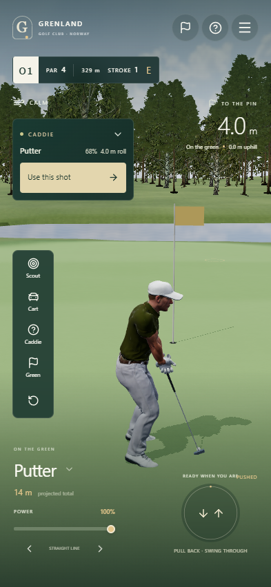
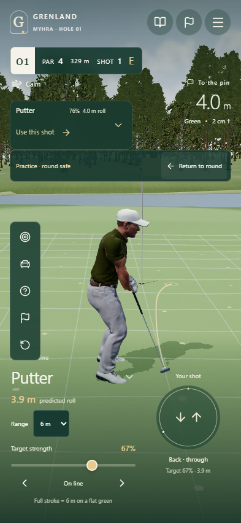

baseline-128fdff
Load → caddie → overview → swing → putting
rebuild
Load → caddie → overview → swing → putting
Recorded in Chrome at 393 × 852. Both builds start fresh; the tee swing uses the same mouse travel. The rebuilt touch release, strength model, physics and putting presentation deliberately differ from the baseline. This footage is browser evidence, not physical iPhone verification.

